Part 0: Calibrating Your Camera and Capturing a 3D Scan
In this part, I calibrated my camera using images of a calibration target, then used the
recovered intrinsics and camera poses to visualize a sparse 3D scan of the scene in Viser.
The plots below show the camera frustums and associated images used to build the initial
3D understanding of the environment.
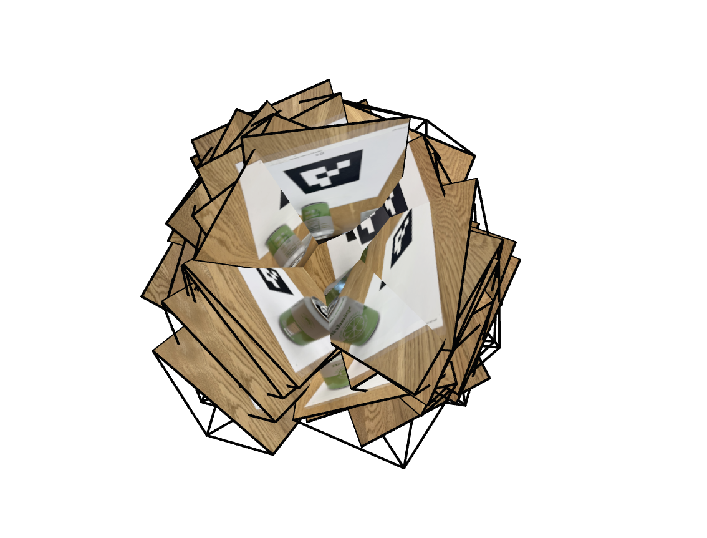
Camera frustums and images in Viser (view 1).
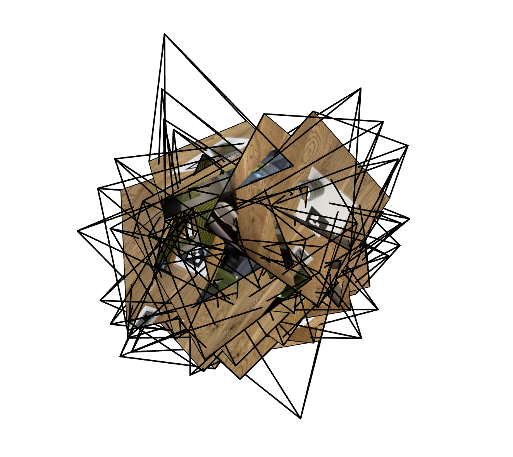
Camera frustums and images in Viser (view 2).
Part 1: Fit a Neural Field to a 2D Image
Model Architecture and Training Setup
For the 2D neural field, I first normalized each image to RGB values in the range
[0, 1] for more stable learning. My model uses a positional encoding (PE)
layer with maximum frequency level L = 10, which allows the network to
capture high-frequency details in the image as a function of pixel coordinates.
The encoded coordinates are passed through a stack of three Linear + ReLU
layers, each with a width of 256 channels. Finally, I use a Linear +
Sigmoid output layer with width 3 to predict RGB values at each pixel
coordinate. The Sigmoid output ensures that predicted colors remain in the valid
(0, 1) range.
I trained the model with a mean-squared error (MSE) loss and the Adam optimizer with a
learning rate of 1e-2. At each iteration, I sampled a batch of
10,000 pixel coordinates and ran the training loop for
1000 iterations. I used Peak Signal-to-Noise Ratio (PSNR) to measure the
reconstruction quality over time.
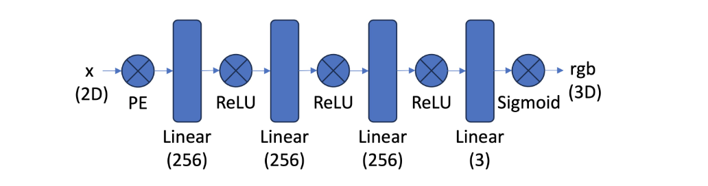
Model architecture for the 2D neural field (positional encoding + MLP).
Training Progression (Staff Fox Image and My Bottle Image)
Below are training progress visualizations for both the provided staff fox image and my own
custom bottle image. Each figure shows how the neural field gradually improves its
reconstruction quality across training iterations.
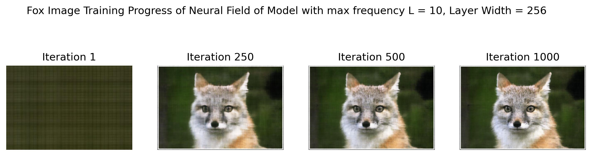
Training progression on the provided fox image.
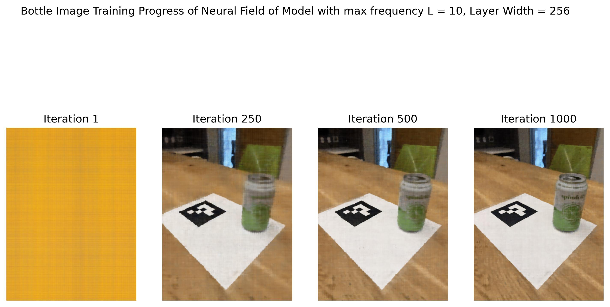
Training progression on my bottle image.
Effect of Positional Encoding Frequency and Width
I evaluated the impact of two different maximum positional encoding frequencies
(L = 2 and L = 10) and two different MLP widths
(32 and 256 channels). This yields four model
configurations, whose final reconstructions are shown in a 2×2 grid.
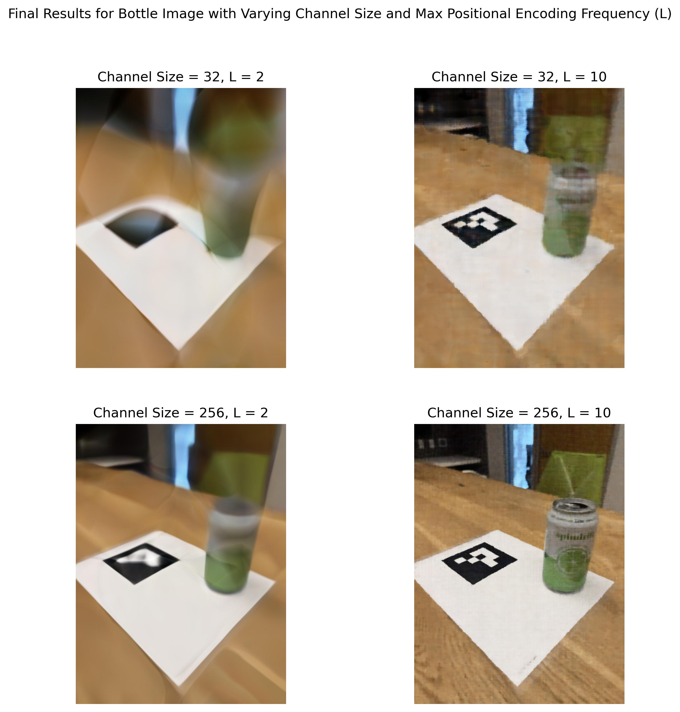
Final results for different combinations of max positional encoding frequency
(L = 2 vs L = 10) and MLP width (32 vs 256).
PSNR Curve on My Bottle Image
The PSNR curve below shows how the reconstruction quality on my bottle image improves over
training iterations. As training progresses, the model quickly captures the global color
structure and then refines high-frequency bottle details.
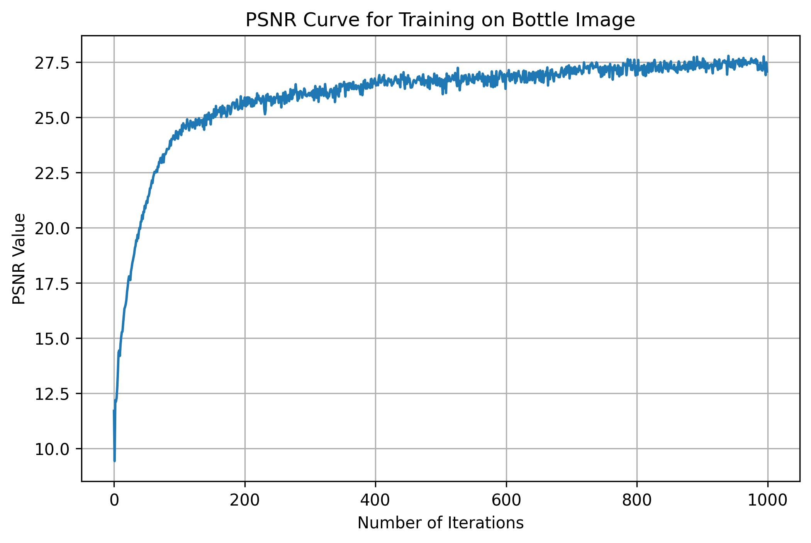
PSNR curve for training on my bottle image.
Part 2: Fit a Neural Radiance Field from Multi-view Images (Lego Dataset)
In this part, I implemented a full Neural Radiance Field (NeRF) pipeline on the Lego dataset.
This includes building rays from camera parameters, sampling along those rays, creating a
custom ray dataloader, defining the NeRF architecture, performing volume rendering, and
training the model end-to-end. I also visualized the ray geometry, training progress, and
rendered novel views.
Part 2.1: Create Rays from Cameras
To create rays from cameras, I:
Implemented a function to transform 3D points from camera coordinates into world coordinates
using the camera-to-world extrinsic matrix (rotation and translation).
Implemented a pixel-to-camera mapping that backprojects pixel coordinates and a depth
parameter into 3D camera coordinates using the camera intrinsics
(fx, fy, cx, cy).
Combined these pieces into a pixel-to-ray function that:
(1) converts pixel centers into 3D camera points on a reference depth plane,
(2) transforms them into world coordinates, and
(3) constructs ray origins at the camera center and ray directions pointing through each
pixel, normalized to unit length.
Part 2.2: Sampling
Sampling Rays from Images
To feed the NeRF with diverse observations, I implemented a sampler that:
Randomly selects a set of pixels across all training images by sampling indices over the
product of (num_images × height × width).
Computes the corresponding image indices and pixel coordinates, then converts those pixels
into camera rays using the pixel-to-ray function applied to the selected camera poses.
Normalizes all ray directions and returns a batch of ray origins, ray directions, and the
ground truth RGB colors at the sampled pixel locations.
Sampling Points along Rays
Along each ray, I:
Uniformly sample a fixed number of depth values between specified near and far bounds
(e.g., 2.0 to 6.0 for the Lego scene).
Optionally add stratified noise to the depths: I compute midpoints and bin widths and
jitter each sample within its bin for better integration and anti-aliasing.
Convert these depth samples into 3D world points by starting at the ray origin and moving
along the ray direction according to each sampled depth.
Return the 3D sample points together with the associated depth values along the ray.
Part 2.3: Putting the Dataloading All Together
I wrapped the above components into a custom ray dataset class that:
Stores all training images, the shared camera intrinsics matrix, and the camera-to-world
extrinsics for each view.
Precomputes a grid of pixel coordinates and, for visualization, a reference set of rays
from a single camera.
On each call to the sampling method, randomly picks image–pixel pairs, converts their
pixel coordinates into rays using the correct camera pose, and returns ray origins, ray
directions, and their corresponding RGB colors.
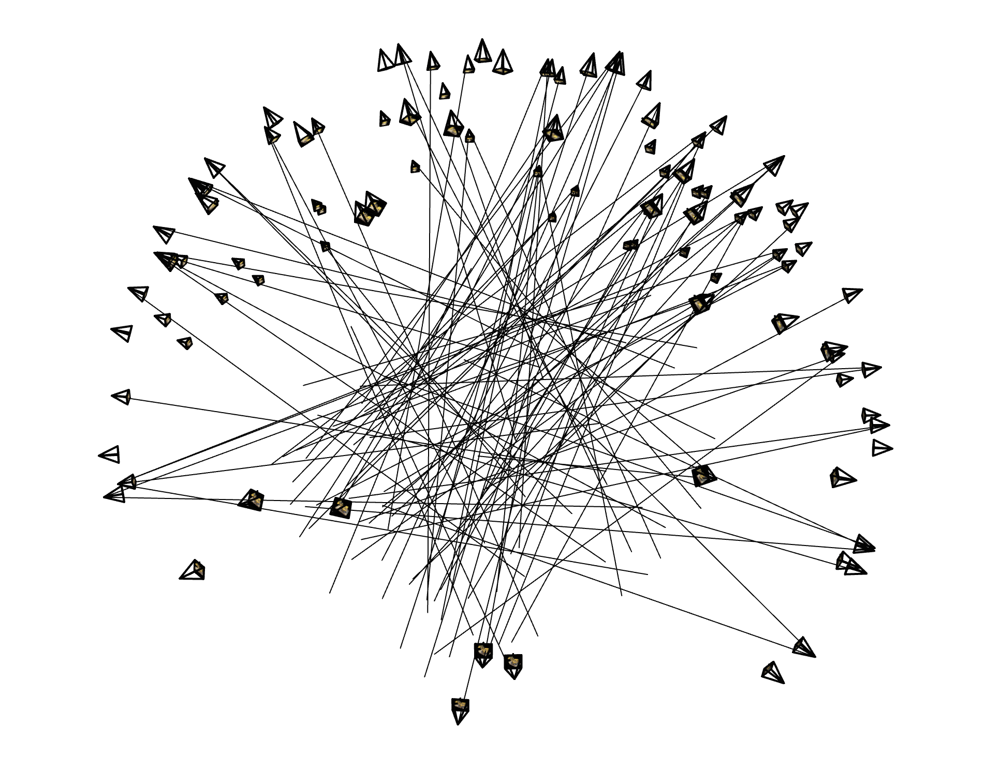
Visualization of cameras and 100 rays sampled at a single training step.
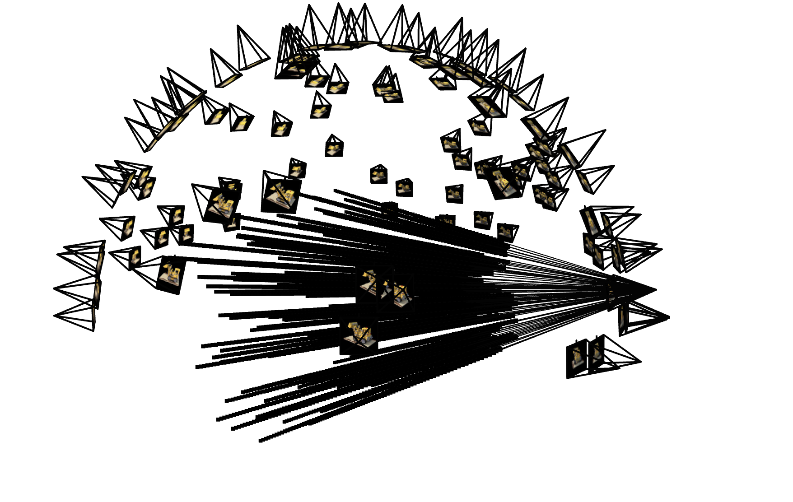
Visualization of cameras, 100 rays from a single camera, and the sampled points along those rays.
Part 2.4: Neural Radiance Field Architecture
My NeRF model consists of:
A positional encoding module that maps 3D positions and viewing directions into a higher
dimensional space using sinusoidal functions up to a specified maximum frequency
(e.g., Lx = 10 for positions and Ld = 4 for directions). This
allows the network to represent high-frequency geometry and view-dependent appearance.
A trunk MLP that processes the encoded 3D position, with several fully connected layers of
width 256 and a skip connection that concatenates the original positional encoding back
into the network at a chosen depth. This helps preserve high-frequency details.
A density head that maps the trunk features to a single non-negative density value
(sigma) per sample, with a positive bias initialization to encourage non-zero densities
early in training.
A feature head that produces intermediate features, which are concatenated with the encoded
view directions and passed through a color head to predict RGB values in (0, 1)
via a final Sigmoid activation.
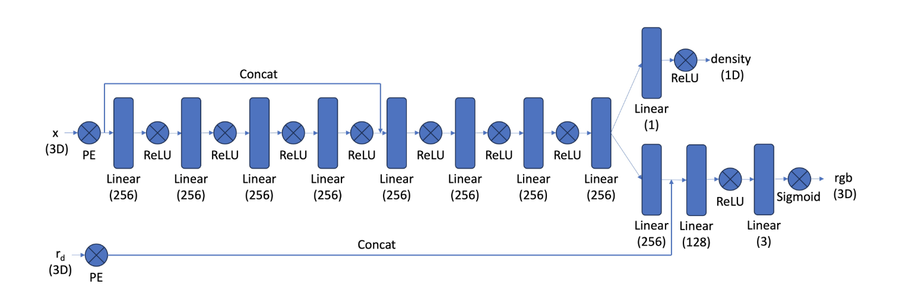
Neural Radiance Field architecture used for the Lego dataset.
Part 2.5: Volume Rendering and Training
For volume rendering, I:
Evaluate the NeRF at all sample points along a batch of rays to get densities and colors.
Compute alpha values from the densities using an exponential attenuation model with a
constant step size between samples.
Accumulate transmittance along each ray as the product of the remaining transparency and
use it to compute per-sample weights.
Produce the final rendered color for each ray by taking a weighted sum of the predicted
colors along that ray.
For training, I:
Repeatedly sample random rays from the multi-view dataset, sample points along those rays,
query the NeRF, and render colors via volume rendering.
Compute an MSE loss between the rendered colors and the ground-truth pixel colors, and
optimize with Adam using a learning rate of 5e-4.
Periodically render a small set of validation views, compute their PSNR, and save
intermediate images to monitor training progress.
Trained for 1000 steps on the Lego dataset with near = 2.0, far = 6.0, n_samples = 64,
and batches of 10,000 rays.
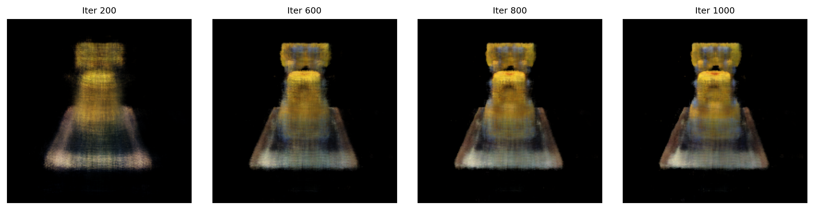
Predicted Lego images across training iterations.
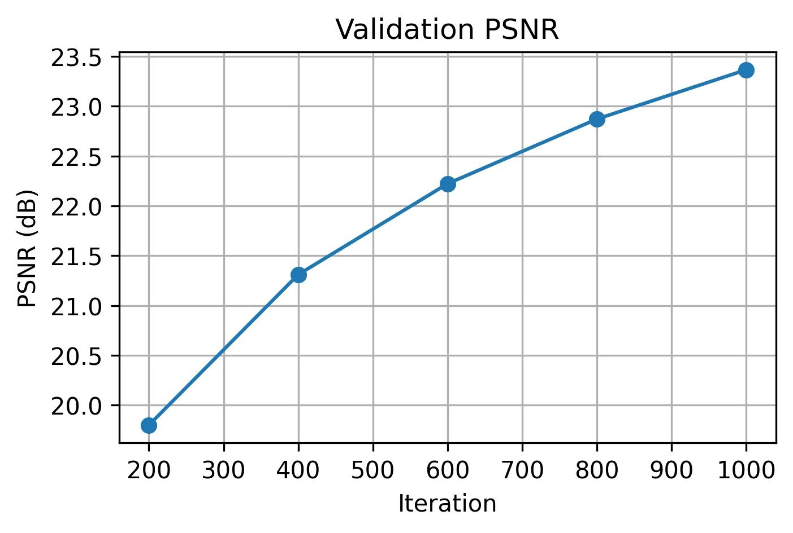
Validation PSNR curve on 6 Lego views. The model reaches a validation PSNR of
approximately 23.37 dB after 1000 training steps.
Spherical Rendering of the Lego Scene
Using the provided test camera extrinsics (c2ws_test) and the trained NeRF
(1000 iterations), I rendered a spherical orbit video around the Lego scene. The video
below shows smooth novel views as the camera moves around the object.
Spherical orbit rendering of the Lego scene using the trained NeRF.
Part 2.6: Training with My Own Data (Spindrift Can)
Hyperparameter and Code Changes
For my own dataset (a Spindrift can with ArUco markers on a table), I adjusted the NeRF
hyperparameters and training procedure to better reflect the geometry of my capture setup:
near = 0.002: I set a much smaller near bound because some images have
the bottle extremely close to the camera, and I wanted to start sampling just in front
of the camera.
far = 1.0: I used a far bound of 1.0 since the bottle and ArUco tags
are relatively close to the camera in all views. This is large enough to include the
table and tags but small enough to avoid sampling unnecessary background.
n_samples = 128: I increased the number of samples per ray for more
accurate volume rendering on my custom scene, which helps resolve fine details of the
bottle and markers.
Instead of rendering validation views during training (which caused GPU memory pressure),
I modified the training loop to periodically save model checkpoints to disk. After
training completed, I reset the notebook and separately loaded these checkpoints to
render intermediate predictions and visualize the training progression.
I also implemented a novel view generation pipeline that:
Constructs a camera pose that looks at the origin (assumed to be near the center of the
bottle) from a chosen starting position.
Applies a rotation around the object to produce a sequence of camera-to-world matrices
that orbit the scene.
Uses the trained NeRF to render an image from each of these poses and stitches them
together into a looping GIF that shows a 360-degree view of the bottle.
Training Curves on My Bottle Dataset
The plots below show how the training loss and PSNR evolve over iterations on my custom
Spindrift can dataset. The loss decreases steadily while PSNR improves, indicating that the
model is successfully learning to reproduce the multi-view images.
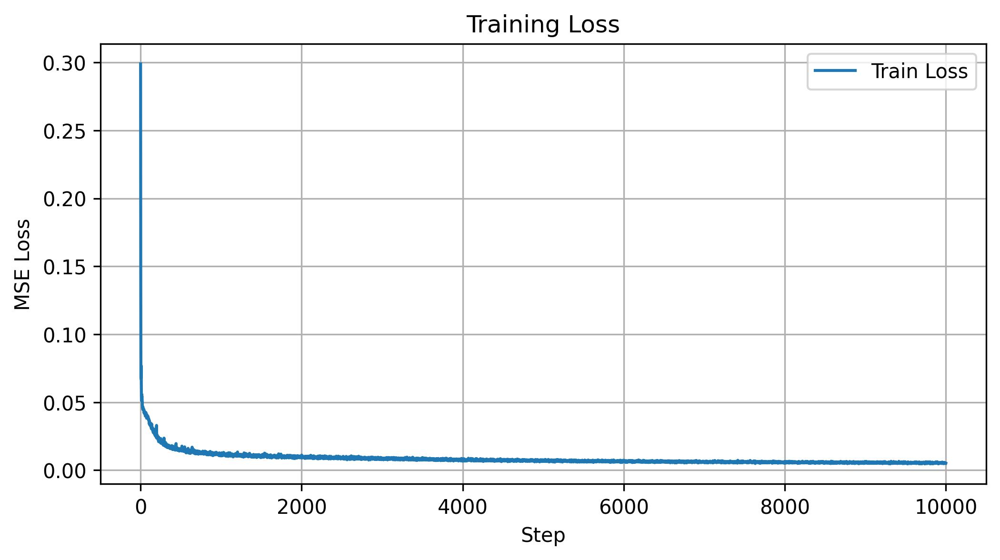
Training loss over iterations on my Spindrift can dataset.
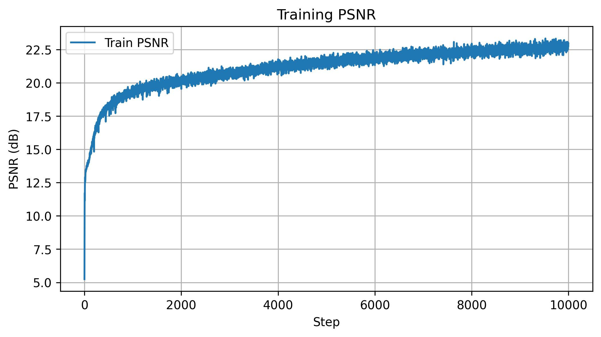
Training PSNR over iterations on my Spindrift can dataset.
Intermediate Scene Renders During Training
Using the saved checkpoints, I rendered the scene at several training milestones to
visualize how the NeRF gradually refines the geometry and appearance of the bottle and
surrounding table.
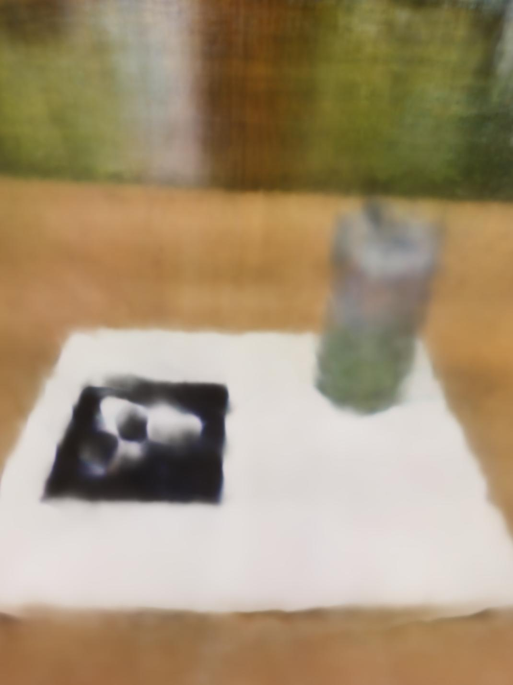
Render after 2,500 iterations.
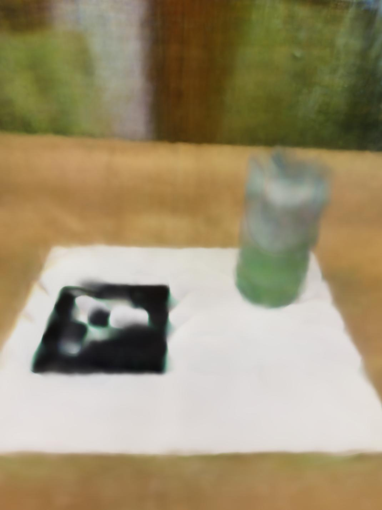
Render after 5,000 iterations.
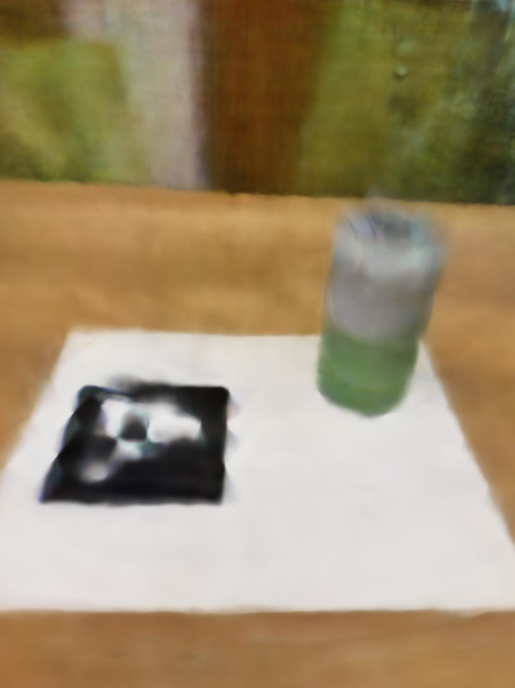
Render after 7,500 iterations.
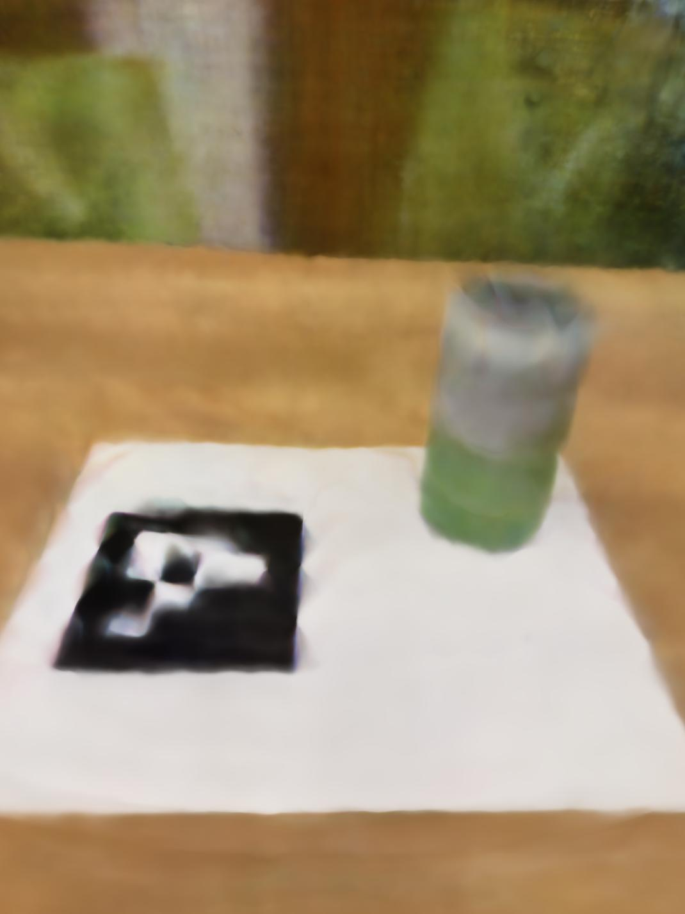
Render after 10,000 iterations.
360° Novel View of My Spindrift Can
Finally, using the orbit rendering pipeline, I generated a 360° GIF of the camera circling
my Spindrift can. This demonstrates that the trained NeRF can synthesize realistic novel
views from camera positions that were never seen during training.
GIF of the camera circling my Spindrift can, showing novel views.